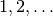
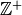
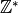

The OatBran¶
Oat Bran helps with regular expressions. Names are uppercased to avoid keyword clashes
# the class-based expressions are mostly for organization
# but sometimes they're just too clunky
LEFT_BRACKET = '['
RIGHT_BRACKET = ']'
Formal Definition¶
These are the basic building blocks of regular expressions.
| Name | Symbol |
|---|---|
| empty_string |  |
| alternative (OR) | |
| kleene_star |  |
FormalDefinition.empty_string |
|
FormalDefinition.alternative |
|
FormalDefinition.OR |
|
FormalDefinition.kleene_star |
Groups¶
Besides the basic use of grouping with parentheses (to explicitly apply operations to multiple characters, for example), the Group hold perl ((?<expression>)) and python ((?P<expression>)) group-extensions. Since parentheses have to be symmetric these are applied as methods rather than strings that are added to other strings.
Group |
The Group helps with regular expression groups |
Group.group(expression) |
Create a grouped expression |
Group.named(name, expression) |
Creates a named group |
Group.not_followed_by(suffix) |
Creates a (perl) negative lookahead expression |
Group.not_preceded_by(prefix) |
Creates a (perl) negative look behind expression |
Group.preceded_by(prefix) |
Creates a look-behind expression |
Group.followed_by(suffix) |
Creates the expression to match if followed by the suffix |
Quantifiers¶
Quantifiers are used to describe repetitions of patterns. The zero_or_more quantifier is an alias for the FormalDefinition.kleene_star. Although I usually think of these as suffixes, the exact and m-to-n versions need braces so the quantifiers are applied as methods to make their use uniform. I use the string format method so they will not raise errors if passed non-strings as patterns.
Quantifier |
A class to hold cardinality helpers |
Quantifier.one_or_more(pattern) |
Adds the one-or-more quantifier to the end of the pattern. |
Quantifier.zero_or_more(pattern) |
Adds the kleene star to the pattern |
Quantifier.zero_or_one(pattern) |
Adds the zero-or-one quantifier to the pattern |
Quantifier.exactly(repetitions) |
Creates suffix to match source repeated exactly n times |
Quantifier.m_to_n(m, n) |
Creates a repetition ranges suffix {m,n} |
Character Classes¶
A helper with character classes (stuff put in square-brackets (‘[]’)). There are some similar patterns in other classes. I tried to put single characters in this class (e.g. digit) and multiple characters or those with quantifiers in other classes (e.g. digits or optional_digits).
CharacterClass |
A class to help with character classes |
CharacterClass.character_class(characters) |
Creates a character class from the expression |
CharacterClass.alpha_num |
|
CharacterClass.alpha_nums |
|
CharacterClass.digit |
|
CharacterClass.non_digit |
|
CharacterClass.non_zero_digit |
|
CharacterClass.character_class(characters) |
Creates a character class from the expression |
CharacterClass.not_in(characters) |
Creates a complement character class |
Boundaries¶
Boundaries |
A class to hold boundaries for expressions |
Boundaries.string_start |
|
Boundaries.string_end |
|
Boundaries.word(word) |
Adds word boundaries to the word |
Boundaries.string(string) |
Adds boundaries to only match an entire string |
Common Patterns¶
These are pattens that I use a lot but I could not think of where to put them.
Numbers¶
The numbers are broken up into types based on those listed here. I was originally using the more traditional number types but I keep forgetting which ones have zero in them so I will work with just positive/negative, non-positive/non-negative, and integer/real.
| Name | Description | Symbol |
|---|---|---|
| positive_integer |  |  |
| non_negative_integer | :math:0,1,ldots` |  |
| non_positive_integer | :math:0, -1, -2,ldots` | |
| integer | positive, negative, 0 |  |
| real_number | Positive,negative, 0 |  |
Warning
The integers are allowed to match even when surrounded by punctuation. This makes it okay for sentences and csvs, etc. but means that if given a floating point number it will match the substring to the left of the decimal point (e.g. 10.00213 will match 10).
Warning
Along with the previous warning it should be noted that nonnegative_integer extracts the non-negative portion, it does not ignore negative integers. So if you have -300, the match will be 300. This may change once I start using this, but for now that is the behavior (useful for extracting ranges, maybe – nonnegative_integer + ‘-‘ + nonnegative_integer):
Note
real is treated as a super-set that matches floats or integers.
Numbers |
A class to hold number-related expressions |
Numbers.decimal_point |
|
Numbers.digits |
|
Numbers.two_digits |
|
Numbers.one_hundreds |
|
Numbers.positive_integer |
|
Numbers.nonnegative_integer |
|
Numbers.integer |
|
Numbers.real |
|
Numbers.hexadecimal |
Networking.octet |
TestQuantifier.test_one_or_more() |
Does it return the one-or-more metacharachter? |
TestQuantifier.test_zero_or_more() |
Does it return the kleene star? |